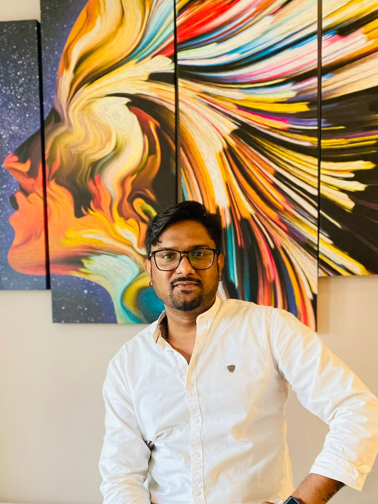

Senior Incident and IT Operations Manager with over eight years of experience orchestrating global infrastructure frameworks, automated pipelines, and critical service recovery at CARFAX Canada. Expert at bridging ITIL v4 with modern SRE and DevOps methodologies to maximize platform availability. Adept at leading cross-functional engineering teams during high-pressure P1/P2 recovery bridges while building robust observability architectures. A strong technical communicator skilled at leveraging APM telemetry to eliminate alert noise and translate complex outages into actionable insights for senior leadership.

Background
Results-driven Incident Management and DevOps professional with extensive experience orchestrating global frameworks and automated pipelines for high-priority P1/P2 incidents to minimize business downtime. Adept at leading cross-functional engineering teams under ITIL governance and facilitating high-pressure technical bridge calls to optimize service recovery using SRE principles. Proven track record of translating complex technical outages into actionable Major Incident Reports (MIRs) for C-suite and senior leadership, while driving continuous operational agility by building robust observability architectures and leveraging APM tools like LogicMonitor and New Relic to automate false-alert filtering.
Forward-thinking DevOps and Enterprise Incident Management Leader with a distinguished record of architecting end-to-end service observability and telemetry to preemptively mitigate business-critical infrastructure anomalies. Highly adept at safeguarding platform availability by commanding high-velocity incident restoration bridges and steering cross-functional engineering teams under strict ITIL, SLA, and SLO mandates. Proven catalyst for operational efficiency through automated Change Management lifecycles and modern SRE frameworks, leveraging root-cause investigations and proactive server health protocols to permanently neutralize production risks.
Highly efficient Major Incident and NOC Analyst with a proven track record of monitoring multi-tiered production networks, infrastructure, applications, and batch jobs to detect and resolve operational deviations. Skilled at managing end-to-end incident lifecycles within ServiceNow, maintaining strict adherence to ITIL standards, standard operating procedures (SOPs), and strict client SLA/SLO commitments. Adept at prioritizing concurrent high-severity issues, facilitating high-impact stakeholder communications, and drafting comprehensive external post-mortem statements. A collaborative coordinator focused on continuous workflow improvement, event monitoring diagnostics, and optimizing alerting tools to reduce downtime and ensure rapid service restoration.
Customer-focused Technical Support Specialist with extensive experience diagnosing and resolving hardware, software, and network configuration anomalies within fast-paced environments. Proven ability to troubleshoot enterprise business applications, manage Active Directory user authentication workflows, and execute OS deployments. Skilled in hardware provisioning, VoIP endpoint support, and network edge administration—including firewall rule adjustments and modem configuration adjustments. A disciplined communicator committed to thorough documentation compliance, standard operating procedures (SOPs), and consistently exceeding target customer service quality benchmarks.
Qualifications
Amazon Web Services (AWS)
HashiCorp Security & IaC Governance
IT Service Management & Infrastructure Governance
Cloud Native Computing Foundation (CNCF)
Humber College, Canada